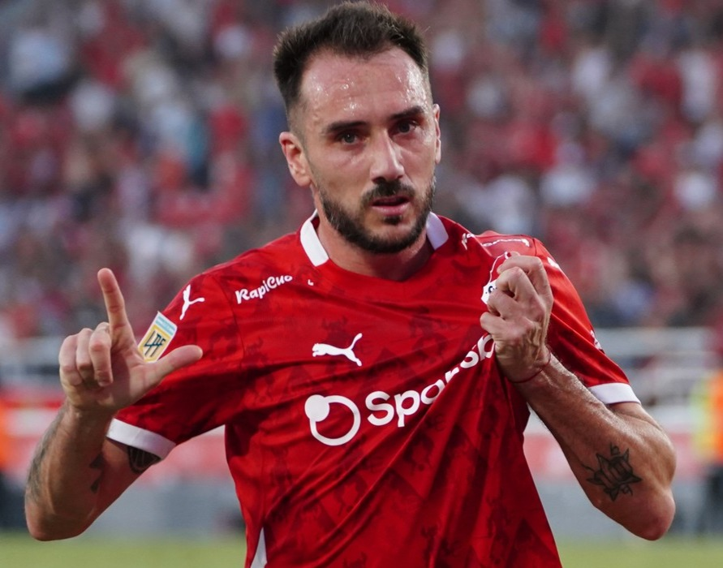
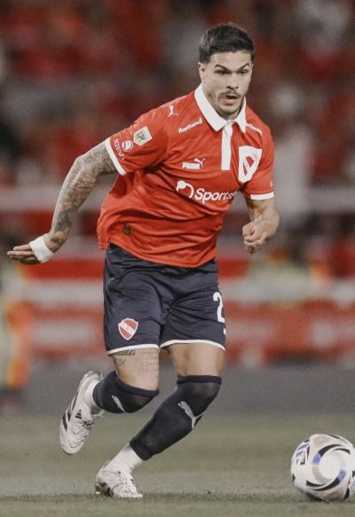
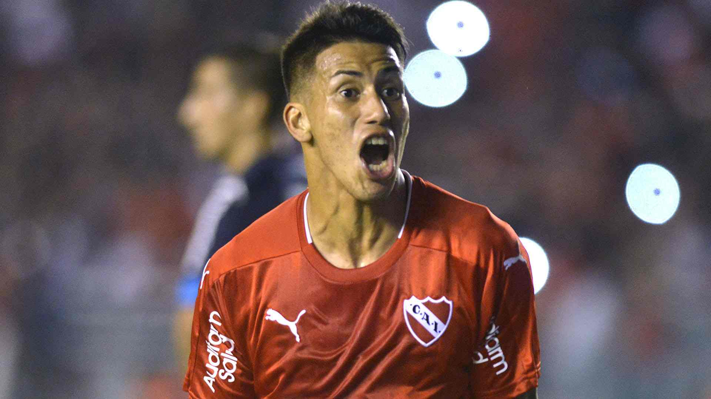
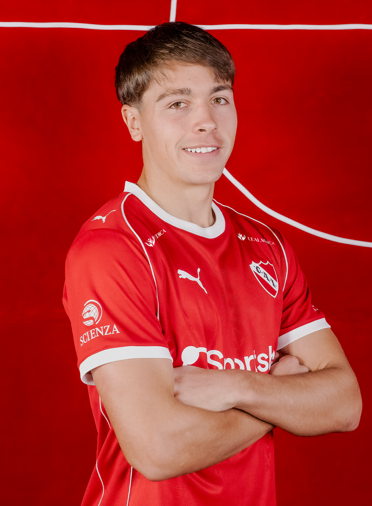
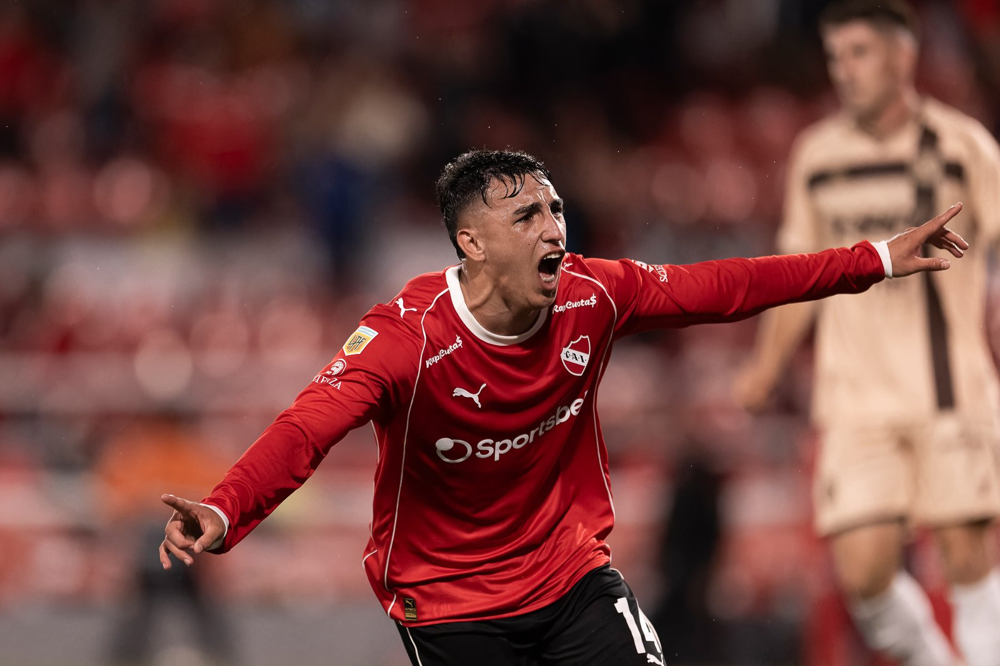
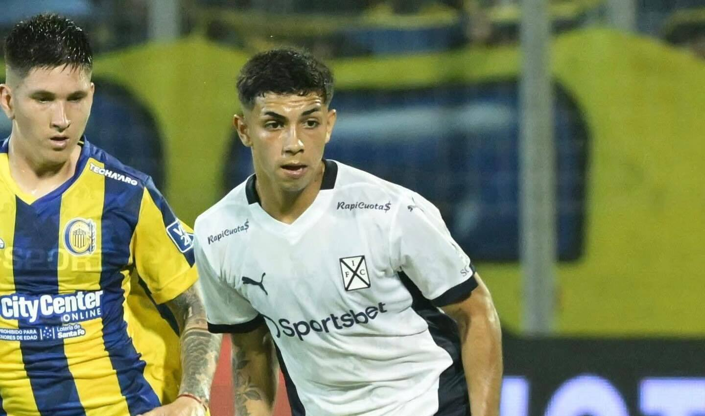

Mediocampistas
9 jugadoresIván Marcone
Mediocentro Defensivo
Ver estadísticas
Número: #23
Edad: 36 años
Nacionalidad: Argentina / Italia
Altura: 1.83 m
Partidos Jugados: 149
Goles: 2
Asistencias: 4
Tarjetas Amarillas: 38
Tarjetas Rojas: 3

Federico Mancuello
Mediocampista
Ver estadísticas
Número: #11
Edad: 37 años
Nacionalidad: Argentina / Italia
Altura: 1.77 m
Partidos Jugados: 229
Goles: 26
Asistencias: 21
Tarjetas Amarillas: 37
Tarjetas Rojas: 4

Rodrigo Cedrés
Mediocentro Defensivo
Ver estadísticas
Número: #5
Edad: 30 años
Nacionalidad: Uruguay
Altura: 1.74 m
Partidos Jugados: 42
Goles: 0
Asistencias: 0
Tarjetas Amarillas: 12
Tarjetas Rojas: 1

Ignacio Malcorra
Mediocampista Ofensivo
Ver estadísticas
Número: #40
Edad: 38 años
Nacionalidad: Argentina
Altura: 1.70 m
Partidos Jugados: 17
Goles: 1
Asistencias: 3
Tarjetas Amarillas: 3
Tarjetas Rojas: 0

Luciano Cabral
Mediocampista Ofensivo
Ver estadísticas
Número: #10
Edad: 30 años
Nacionalidad: Chile
Altura: 1.72 m
Partidos Jugados: 53
Goles: 4
Asistencias: 5
Tarjetas Amarillas: 6
Tarjetas Rojas: 2

Mateo Pérez Curci
Mediocampista Ofensivo
Ver estadísticas
Número: #16
Edad: 20 años
Nacionalidad: Argentina
Altura: 1.79 m
Partidos Jugados: 14
Goles: 0
Asistencias: 1
Tarjetas Amarillas: 4
Tarjetas Rojas: 0

Lautaro Millán
Mediocampista Ofensivo
Ver estadísticas
Número: #8
Edad: 20 años
Nacionalidad: Argentina / Chile
Altura: 1.71 m
Partidos Jugados: 54
Goles: 5
Asistencias: 2
Tarjetas Amarillas: 7
Tarjetas Rojas: 0

Tomás Parmo
Mediocampista Ofensivo
Ver estadísticas
Número: #30
Edad: 18 años
Nacionalidad: Argentina
Altura: 1.71 m
Partidos Jugados: 1

Joel Medina
Mediocampista
Ver estadísticas
Número: #30
Edad: 18 años
Nacionalidad: Argentina
Altura: 1.74 m
Partidos Jugados: 3
Goles: 0
Asistencias: 0
Tarjetas Amarillas: 1
Tarjetas Rojas: 0